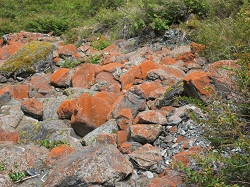
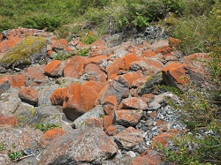

Joint International Conference
”Encounters and engagements: Creating new agendas for medical anthropology”
Date:
June 12th-14th 2013, Tarragona, Spain.Organization:
EASA Medical Anthropology NetworkAAA Society for Medical Anthropology
Universitat Rovira i Virgili
Title of the paper by the Research Group of Toxic Bodies:
Internal Pollution by Environmental Compounds in Risk Societies: An Anthropological Reflection about Trust and Distrust on Food and Environmental Toxicity
Charla debate: La verdad sobre las enfermedades emergentes, las nuevas pandemias del S. XX. Las consecuencias para la salud de las actuales condiciones ambientales
Fecha:
Sábado 6 de octubre a las 17 h.Organiza:
Associació ENSALUTPrograma
- Asociación ENSALUT: “Las enfermedades emergentes y las actuales condiciones ambientales”
- Jaume Cortés: “El reconocimiento legal de las enfermedades emergentes y la legislación ambiental”
- Dra. Francisca López y Dr. Julián Márquez: “Reflexiones médicas sobre las Enfermedades de Sensibilización Central”
- Cristina Larrea y Araceli Muñoz: “Corporalidad Tóxica: reflexiones antropológicas sobre la contaminación por CTP (Compuestos Tóxicos Persistentes)
- Carlos Martiínez Requejo: “Salud del hábitat y bioconstrucción”
Encuentro “Corporalidad Tóxica: culturas de la contaminación”
(dentro de la XXIII Escuela de Salud Pública de Menorca)
Fecha:
20 y 21 de septiembre de 2012Organiza:
Grupo de Investigación sobre Cuerpos Tóxicos y Etnoepidemiología Sociocultural de la Contaminación Interna por Compuestos Tóxicos Persistentes en España (UB)Información:
toxicbodyctp@gmail.com ; http://www.ub.edu/scsc/Objetivos:
El objetivo del Encuentro es analizar y profundizar sobre los discursos y las prácticas socioculturales de la experiencia corporal de la contaminación humana, en general, y de la contaminación interna por Compuestos Tóxicos Persistentes (CTP), en particular. Tomando como punto de partida los primeros resultados de una investigación interdisciplinar sobre este tema, se analizarán la percepción, los discursos y las prácticas socioculturales de la contaminación interna por CTP. Se considera relevante para trazar una economía política de la salud ambiental explorar las culturas de la contaminación y la toxicidad. Las aportaciones de la antropología, la epidemiología, la filosofía y otras ciencias sociales contribuirán a analizar los cambios sociales que afectan a la salud humana y a la (re)configuración de los discursos y de las prácticas socioculturales sobre la contaminación y la toxicidad.El encuentro se abrirá con la presentación del proyecto de investigación Cuerpos Tóxicos y Etnoepidemiología Sociocultural de la Contaminación Interna por Compuestos Tóxicos Persistentes en España. Posteriormente, tendrá lugar una conferencia inaugural a cargo de un experto invitado de una universidad extranjera, el cual también participará en el posterior debate y estará presente en todas las sesiones del encuentro.
Cuatro sesiones vertebrarán el programa: 1. Corporalidad tóxica; 2. Responsabilidades, prevención y redes sociales; 3. Percepción del riesgo y la contaminación; 4. Medios de comunicación y formas de divulgación. Dentro de cada sesión uno de los miembros que integran el grupo de investigación se encargará de presentar una parte de los resultados. A continuación, un debate con los participantes cerrará cada una de las sesiones.
Con este Encuentro se pretende contribuir al diseño de estrategias formativas e informativas de prevención, de orientación de prácticas de protección y de concienciación de los problemas de salud que los tóxicos requieren. La difusión de esta problemática a partir de los primeros resultados de esta investigación y las aportaciones de los expertos invitados es fundamental para que nuestra sociedad tome conciencia de estos nuevos problemas de salud.
Sesiones
- Sesión 1: Corporalidad tóxica: “Imaginarios del cuerpo tóxico”.
- Sesión 2: Responsabilidades, prevención y redes sociales: “La construcción de las responsabilidades individuales ante el riesgo alimentario”.
- Sesión 3: Percepción del riesgo y la contaminación: “Riesgos y peligros ante las nuevas toxicidades”.
- Sesión 4: Medios de comunicación y formas de divulgación: “Discursos sobre contaminación en los comentarios de los lectores de prensa”.
Medical Anthropology at Home Conference VII ”New Socialities and Subjectivities in 21st Century Health Care”
 
